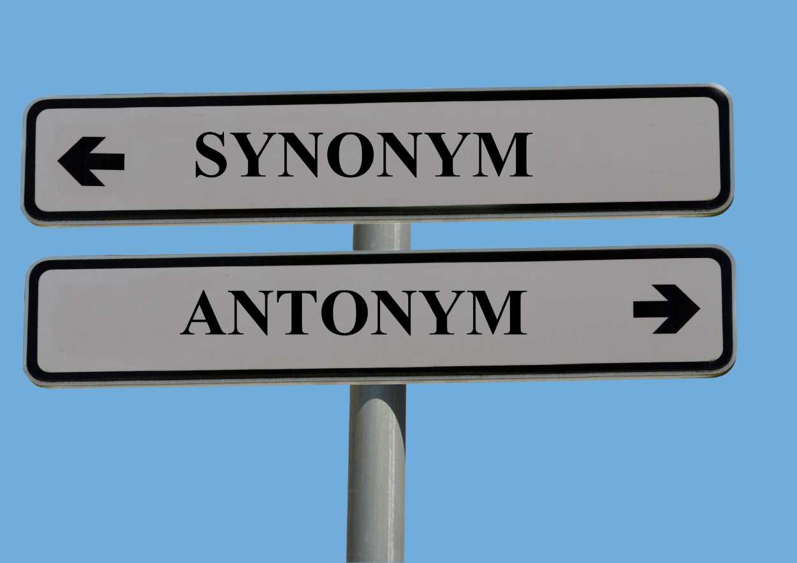

In the earlier class we learnt SYNONYMS, which are word pairs or word groups with same or
nearly exact meanings. Today we are going to do the opposite!
We are going to study word pairs that mean the opposite to each other.
They are called ANTONYMS.